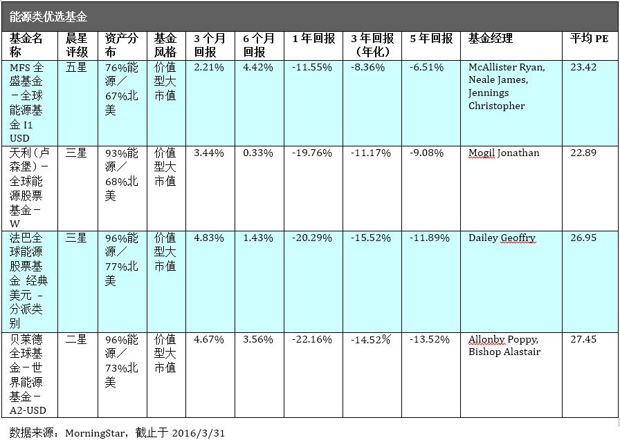
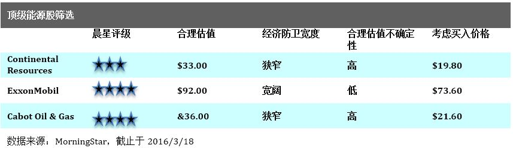
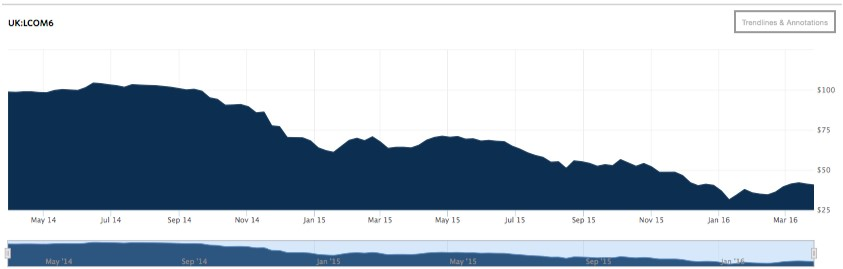
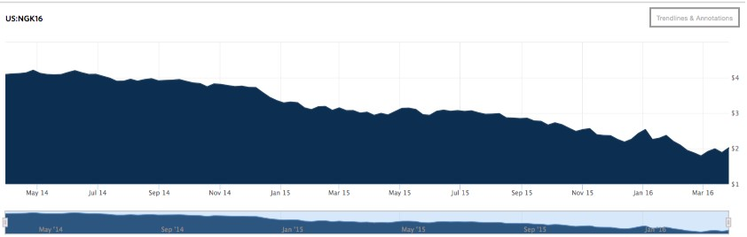

市场近期反弹，但许多不确定因素仍然存在。这表明，近期的价格可能会继续表现不佳，或者会进一步恶化。
然而，对于一直等待原油投资机会的投资者来说，这将是一个非常好的消息。在此，我们为你精选与能源相关的优质投资品，并在后文中详细描述宏观背景下的原因。
相关基金推选：
我们的观点
上述能源基金均主要配置于北美市场，这符合我们下述的分析与预期。同时，上述基金的风格均为价值型大市值。我们知道，在这次长时间的能源价格下跌过程中，大量企业面临财务困境，而只有那些实力强劲的大企业才能利用自己的财务与资源优势抵御风险，并在去产能中进一步巩固行业地位。从这些基金的平均持股市盈率（PE）来看，均值在25.18，远高于其它传统行业的平均市盈率。但是，只要油价企稳或反弹，企业的盈利能力会得到快速提升，2017年的市盈率将会比较大幅的降低。
考虑到过往业绩的波动性以及MorningStar给予的评级，在上述基金中首推MFS全盛基金－全球能源基金I1 USD。相对于其它能源基金，MFS全盛基金－全球能源基金I1 USD体现出比较谨慎的能源类股票配置比例，仅占76%，这也是其为何优于其它能源类股票基金的过往表现的一个重要原因。
对于更为激进的投资者来说，配置比例高达96%的贝莱德全球基金－世界能源基金－A2-USD值得考虑。其过往业绩的波动性低于上述同类的其它基金。
相关股票推选：
我们的观点
Continental Resources (CLR) － 这是在美国专注于石油开采与生产的企业中的首选。Continental在Bakken Shale早起的发展中起到了关键性的作用，现在持有120万英亩的高产油田。公司正在通过描绘开发南方中部的俄克拉荷马油田来给已经拉开的弓添上第二根弦。即使按照目前的价格，在这些地区开钻的油井也能提供有吸引力的回报，而Continental持有的油田储备将至少有20年可供开发。公司流动性充足，并可期待2016年继续保持现金流中性。
ExxonMobil (XOM) － ExxonMobil提供了集价值、质量与防卫于一体的投资标的。Exxon的产品组合将向液态定价转移，因为燃气量下降，同时新原油以及液化天然气项目开始投产。公司历史上也以其超越的资本分配与运作能力区分于其它主要竞争对手，因此也比其竞争对手提供了更高的资本回报。
Cabot Oil & Gas (COG) － 在燃气方面，Cabot控制着超过十年的高产能低成本的开开采储存，目标于位于滨州的干油气生产商Marcellus Shale。完全负载的现金保本成本在每1000立方英尺2.5美元，这能为公司在未来的几年保持财务基础。
经济大环境下，能源价格将持续波动，因为：
我们仍然相信：原油的价格远低于能够鼓励足够投资来满足2017年以后的市场需求水平，我们中期周期每加仑价格的展望保持在布伦特原油70美元以及西得克萨斯中间价64美元。
但近期的价格可能会继续表现不佳，或者进一步恶化。回到2月份，许多原油产出国，包括沙特阿拉伯与俄罗斯，同意把原油产出控制在2016年1月份的水平以帮助实现供求平衡。作为结果，市场反弹，但许多不确定因素仍然存在，其中包括最为瞩目的是否伊朗可能会拒绝随从大流从而破坏协议，或者这些国家的实际产量能否彼符合彼此同意的水平。
由于原油生产商艰难地匹配预算与现金流，美国逆流中的资本预算今年再次大幅下跌。缩减的投资将传导到更强的产能下降。这也将同时帮助把全球市场带回平衡，但时间有多快还需要取决于上述提到的产能冻结是否成功。不管怎样，这些帮助并不可能一夜间发生作用。
巨幅削减的石油为导向的钻井活动，在短期内同样能够缩减美国天然气生产的增长。但是在一些地区，如：Marcellus以及Utica，低成本库存的财富累积仍然指向持续的增长直至2020年末以及更远的时间。
充足的供应正压制着目前的天然气价格处于低位，但是长期来说，我们期待来自于液化天然气出口以及工业需求的增加能缓解这一局面。我们中期周期的美国天然气价格估计没有改变，仍维持在每一千立方英尺4美元。
能源投资者目前正纠结于这样的一个关键问题：石油行业究竟需要多久才能从目前的供给过度的阶段中走出来并且重新平衡自己？
鉴于大幅缩减的资本投入，美国的产能很可能今年下降。预计2016年全球的需求将会每天增加120万桶。如果今年原油平均价格低于预期的50美元一桶，全球供应预计维持非常平稳的状态，并且供应不会在2017年增长。然而，目前大规模的超量供应将导致库存继续增加至2017年年中，但这是最乐观的估计。
那这对于原油价格意味着什么呢？
美国生产企业评论显示：如果WTI原油价格超过45美元一桶，许多企业将开始完成建设积压的被推迟的钻井，有些甚至会增加钻井。因此，近期油价上升超过此水平的话可能不能维系。但是，今年强劲下跌的可能性也在消失。我们期待OPEC以及美国之外的产量也会因价格下跌带来惊讶，近期从墨西哥以及哥伦比亚发出的降低产量目标的信号已经成为一种趋势，并非一次性的偶然事件。因此，我们预计WTI的价格将在未来的12-18个月继续维持在35-45美元一桶的范围，但必须警惕原油消费国（如中国）的经济恶化会带来油价进一步下跌的风险。除此之外，我们预测中期周期的逐步反弹，这与长期的边际成本相一致。
布伦特原油价格走势图：
数据来源：华尔街日报
Nymex天然气2016年5月电子交易盘：
数据来源：华尔街日报